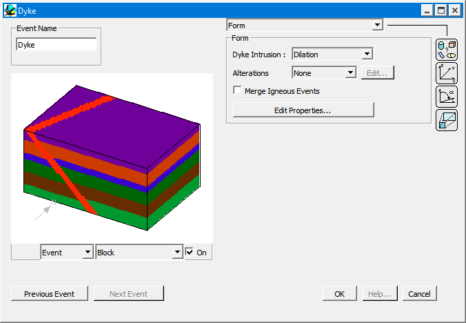
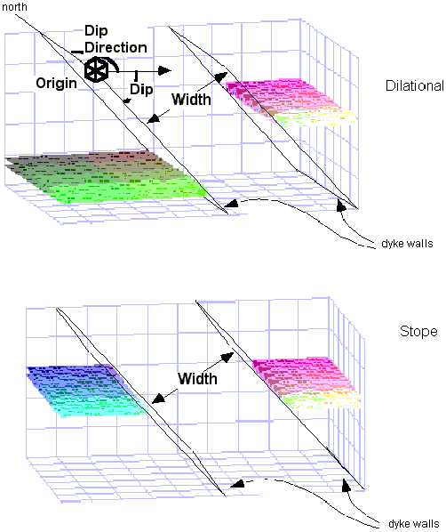

Dyke
In order to define an dyke event, place an Dyke icon  in the History window. You will then be provided with the Dyke definition window.
in the History window. You will then be provided with the Dyke definition window.

Dykes are parallel sided and are infinite in extent. The X,Y,Z coordinates define one point on the upper boundary of the dyke. The dyke can either be stope like, where pre-existing material is replaced, or dilational, where the material on each side of the dyke is pulled apart to allow the dyke to form, and in this case an offset can be defined by the projected slip vector on the lower boundary. For dykes the name and geophysical properties have to be added as well.
| GROUP | NAME | FUNCTION |
|---|---|---|
| Form | Dyke Intrusion: | |
| Dilation | Dyke fills open space | |
| Stope | Dyke replaces existing rock | |
| Alterations: | ||
| None | No alteration halo associated with this event | |
| Top | Alteration halo on "hanging wall" side of dyke | |
| Bottom | Alteration halo on "foot wall" side of dyke | |
| Both | Alteration halo on both sides of dyke | |
| Edit | Brings up Alteration Profile window |
| Edit Properties | Editing window for geophysical properties of dyke rock | |
| Position | X | X position of one point on lower contact of dyke |
| Y | Y position of one point on lower contact of dyke | |
| Z | Z position of one point on lower contact of dyke | |
| Orientation | Dip Dir | Dip Direction of dyke plane |
| Dip | Dip of dyke plane | |
| Pitch | Pitch of slip of hanging wall for dilational dyke (leave at 90°) | |
| Scale | Rotation | Rotation of shear zone block in degrees, around normal to shear zone passing through X,Y,Z, anticlockwise looking down rotation axis |
| Slip | Displacement of hanging wall of dyke (should be equal to Width) | |
| Width | Width of dyke |

Noddy · open source under the MIT licence · Loop3D/noddy_qt